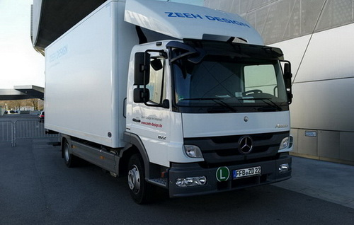
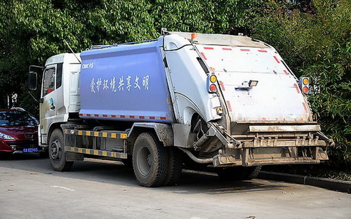

工艺流程图
工序图
公司介绍
中山市三乡镇鸿途轮胎加工厂
成立于2008年，位于广东省中山市神湾镇，交通便利、四季如春，对于轮胎翻新这个受气候影响的行业来说，是最适合不过了。本厂开创时就聘请了中国翻新行业的开创者之一韩品工程师，他参与了中国轮胎行业的机器设计，工艺流程的制定。从业二十多年来，有丰富的轮胎翻新经验和技术，以及解决问题的能力。扶持指导了中国一百多家轮胎翻新厂的建设与技术指导。
我们的操作人员是安工位单独分工作业，不像其他轮胎翻新厂用团体作业而导致分工不明、责任不清、影响品质。而我们是分工分岗位作业，工人每天重复只做一样工作，因此能熟能生巧，越做越精，越做越好。工人的责任心和积极性强，哪个岗位出问题就能找到相关人员追究责任，所以工人也不会偷工减料，草草了事，而必须按照标准流程，兢兢业业作业。因此对品质有最大限度的保障。技术指导。
我们收到客户的轮胎首先由专业的技术人员全检，有问题的轮胎坚决不做，决不会因为多做多收费而盲目生产，这种损害客人利益，损害我们公司名誉的事情，我们坚决不干！当生产完后，技术人员还会对成品全检，对于有问题的轮胎全部挑出来，该返工就返工，该报废的我们把胎面割下来给客人重做，绝不放一条已知有问题的或质量不达标的轮胎出厂。我们鸿途轮胎加工用人格捍卫我们的品质！技术指导。
鸿途轮胎翻新加工厂服务指南
1、本公司生产的翻新轮胎胎面终身保证不开胶不脱层，凡在使用中边侧开裂或起包起泡脱层者，我们终身免费维修，若胎面丢失或者损坏， 我们免费重做相近新旧的胎面给客人，或者根据胎面的使用程度折价理赔，保证客人无后顾之忧，此条件适用于加工和商品胎。
2、加工胎在一个月内胎侧气泡分层，我们将免费为客人做一条。超过一个月不理赔，商品胎保证三个月。
3、加工胎内无补丁，一个月内爆胎，我们将免费为客人用旧面重贴一条，超过一个月则不处理或者收费处理。
4、如有补丁三个月内爆胎，我们免费用旧面重做一条，超三个月则不处理或者收费处理。
5、商品胎品质保证也如上。
6若车辆超载或者加气过多使用不当，则不在此保证之列。
我们有别人做不到的地方
产品展示
专业公交车轮胎翻新加工
公交车的轮胎主要注重耐磨性，因为公交车经常刹车、加油启动、加上司机的心态问题，会多急刹和大油门启动，所以公交车的翻新轮胎要网耐磨性一定是最好的，才能为公交车司节省成本，公交车的轮胎往往注重排水性和导向性，鸿途轮胎翻新加工时会选用直线花纹看，当车辆行驶时会向前后直接挤压上去，从而影响其捉地力，减少安全隐患。直接花纹在行驶中以优异的导向功能，使其在行驶中对方向的把握是最好的。
公交车由于多在路边行驶，所以再行驶中最容易擦到或撞到马路边的台阶。如果撞到或擦到，则轮胎会在相应的地方受伤而分层起鼓，甚至当场爆胎。就算没有爆胎，那条轮胎在翻新加工时，会因内空起鼓，而被挑除，不予翻新加工，直接成了废胎，对公司的成本也是一种极大的浪费。所以对公交车司机的驾驶安全教育也至关重要。
公交车轮胎如果扎到螺丝，钉子或破洞在5cm内，我们鸿途轮胎翻新加工是可以给客户修补好的，也不另收费用，绝对不会有安全问题。

专业货柜车轮胎翻新
针对货柜车我们会选用三线或者斜方块花纹，保证车辆在转弯掉头时不易把翻新轮胎的花纹边侧刮伤，轮胎在原地转动时减少摩擦力，利于转弯掉头，而不损伤胎面，也不用大力给油就可轻易转弯掉头。减少油费和轮胎的磨损，李为客户节省使用成本。
如果跑长途上高速的货柜车，我们选用直线花纹，这样利于排水个导向性，让客户安全在高速路上更加安全。
对于货柜车轮胎翻新加工时，有5cm以内多洞口，我们也会免费为客户加补片，让客户放心使用，为客户节省成本，减少废胎率，充分利用资源，利国利民，惠及子孙。
码头龙门吊防撞胶、缓冲胶
本公司用耐候，高弹性橡胶生产的码头龙门吊上天车两边的防撞胶，具有高耐候性，在70℃—零下50℃均有优异的防撞缓冲性。压缩比非常高，能极好地缓冲天车来回撞击。本公司生产的龙门吊防撞胶为高弹性橡胶生产，比目前市面上用有孔海绵做的使用寿命可延长3倍以上，我们生产的是橡胶防撞胶不会裂开、撕破，而海绵做的使用久了就没有弹性了，也会一块一块裂开、掉下，最后失去防撞效果，影响天车运行安全。您使用本公司的码头龙门吊防撞胶可以节省成本、减少人工换胶的次数及危险度，可以更好的保护天车来回不会被撞击到，保障您的生产安全，同时也减少维修次数，提高工作效率。
联系电话：13702379166
专业运输车队轮胎翻新加工
鸿途轮胎翻新加工厂专业为运输车队翻新加工
运输车队都是天天跑，好路乱路都要跑，用胎次数也很多，而且目前国家对于超载也捉的很严，用新轮胎成本也高，我们专业为运输车辆的轮胎翻新加工，是很好的选择。

专业叉车、堆高机专业轮胎翻新加工
鸿途轮胎翻新加工厂专门为场内用叉车、堆高机开发了轮胎翻新技术，包括实心轮胎也能翻新。
针对场内叉车、堆高机轮胎在场内使用前进速度慢，需要原地旋转等特点，我们专门选择了一种和原装胎花纹一致的大块花纹，利于其他在承压下有更大的接触地面的面积，使其能承受更大的重量。大块花也利于增加轮胎在原地转动时的耐磨指数，经几年的使用观察，叉车翻新加工轮胎是一个很好的为客户节省成本的方案，客户只需要花新胎30%-50%的价格，而使用率达到新胎的80%-90%以上。特别是对于大公司，叉车数量的公司可以大量节省公司的生产成本，又可以减少废胎对地球的污染，是件利己利人的好事，更重要的是节省了地球上有限的资源，这比留下更多的钱给我们的后代更加重要。

工地-沙场-石场铲车轮胎翻新加工
沙场、石场专业铲车轮胎翻新加工
针对沙场、石场、石场用的轮胎都是低速、多弯、来回走动、摩胎很快，新胎又贵，所以翻新加工的话可以省一半以上得到费用，是一个省钱、省心的好选择。
专业飞机场地勤车轮胎翻新加工
飞机场地勤车轮胎翻新加工
由于飞机场内车辆很多，而且是低速行驶，使用率很高，用的轮胎也很多。对地球资源浪费也很大，也增加机场成本。我们也专业开发针对飞机场内地勤车的轮胎翻新加工，可以很好的利用飞机场内地勤的旧胎。一为机场运营降低成本，也为我们的子孙节省了资源，是一件值得我们每个地球的人去做的好事，让我们一起把地球的资源去合理利用，减少地球的污染，为后代多留一块净土，多留一块资源，这不是一件钱能做到的事！
专业环卫车轮胎翻新加工
环卫车专业轮胎翻新加工
环卫车辆的路面是在水泥地面式，在山上泥泞路面上行驶。而且地面会有许多垃圾，其中夹杂块、铁钉、玻璃碴，容易刺穿胎体。故建议使用钢丝胎较好，不易被刺穿，而且用新胎也被刺穿的话，就浪费了。如果是翻新胎可以大大减少成本，而且在翻新加工时我们会帮客人免费修补刺穿的地方，不会另外增加成本，对环卫公司是很好的选择。
对于长期出入泥泞、垃圾场的车辆，我们会选用大块花纹（是指胎块较大、较厚的花纹），可以减少被刺穿的机遇，从而减少车辆维修的次数，提高生产效率。

联系我们
联系我们/Contact中山市三乡镇鸿途轮胎加工厂
联系人：冯经理
全国免费热线：400-831-0760
手机：13702379166
传真：0760-86606669
邮箱：3102145301@qq.com
Q Q：3102145301
地址：广东省中山市神湾镇南沙大道光辉路7号